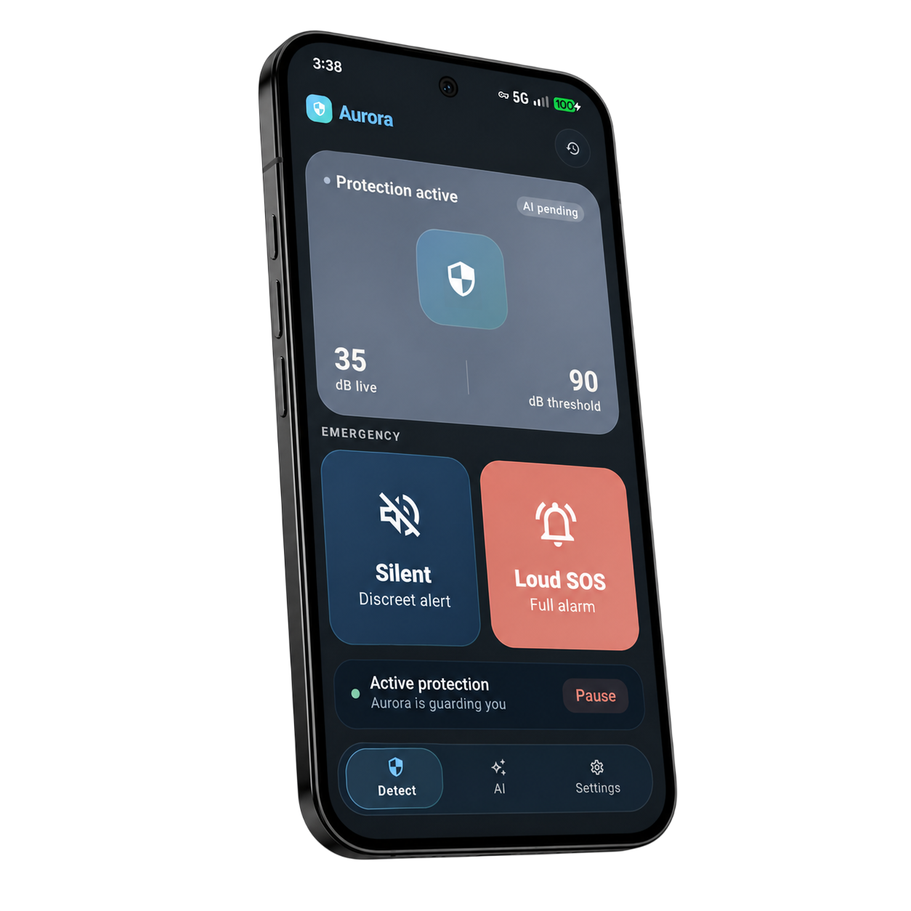
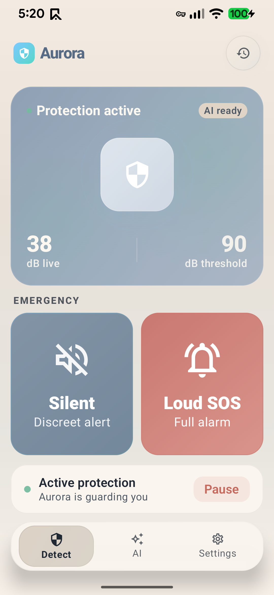
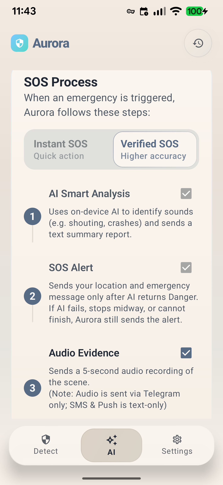
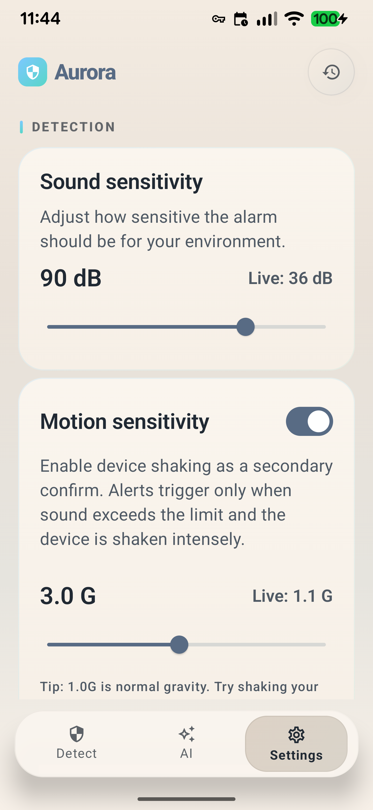
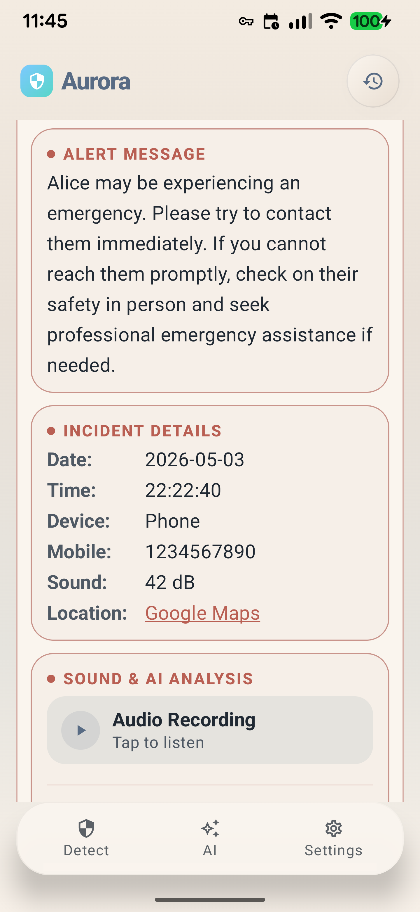

Know the people you care about have quiet backup when they are commuting, studying late, or heading home alone.
Feel safer.
Stay close
when it matters.
Aurora Security listens quietly in the background. On-device AI helps detect signs of danger, so you and the people you love can feel safer every day.
Feel more supported on night walks, solo rides, and the moments when reaching your phone is not easy.
Stay connected in emergencies without turning care into constant checking or invasive tracking.

Status
Protection is active
Private AI monitoring
Scroll to explore
Core Protection
Built for real life.
Built for real life.
Designed for peace of mind.
Aurora combines private AI detection, fast emergency outreach, and clear privacy boundaries so you can trust it on your own phone and recommend it to the people you love.
Private AI Danger Detection
Aurora detects signs of danger on your phone while keeping routine listening on-device and emergency sharing tightly limited.
Help Without Hesitation
If danger is detected, Aurora can start SOS automatically so you do not need to act first.
Recommend with Confidence
Daily conversations and routine background audio stay on your device, so Aurora remains easier to trust and recommend.
Intelligent Detection
Protection that responds when you cannot.
Aurora listens for signs of danger, even when your phone is locked or out of reach.
- Sound and motion threshold trigger detection
- Abnormal event pattern analysis
- Smarter filtering to reduce false alarms
Always There
A quieter way to protect the people you love.
Aurora sends help to your chosen people fast, without making daily life feel intrusive.
- LINE, Telegram, push, SMS, and phone call alerts
- Up to 2 trusted guardians
- Short cancel window for false alarms
Built for People You Care About
Easy to recommend. Easier to trust.
Aurora is built to feel protective, respectful, and easy to keep on your phone.
- Quiet protection for daily life
- Setup that supports both personal use and family use
- Confidence without turning safety into surveillance
How It Works
Protection in
Protection in
3 simple steps
Silent. Automatic. Always there when you need it.
Aurora listens
On-device AI listens for distress, impact, and unusual sounds while your routine audio stays on your phone.
Threat detected
If Aurora detects danger, a short silent countdown gives you time to cancel a false alarm.
Guardians alerted
Trusted contacts get your location and alert fast through LINE, Telegram, push, SMS, or phone call.
Product Video
How Aurora Protects You When It Matters
From danger detection to trusted-contact alerts, see how Aurora provides support when you need it.
Inside Aurora
Why people choose Aurora
See how Aurora helps detect danger, guide response, and keep protection simple in everyday life.
Live Protection
Detect danger
Detect danger
in real time.
The Detect screen keeps protection status, live sound levels, and both SOS actions visible in one calm, readable view.
Protection status at a glance
See when protection is active, whether AI is ready, and which response mode is available.
Live dB tracking
Compare the current sound level against your chosen threshold without opening extra menus.
Silent or Loud SOS in seconds
Choose discreet help or a full alarm directly from the main protection screen.
Guided Response
See what
See what
happens next.
The AI screen explains how alerts are handled, what evidence is included, and how the model supports faster judgment when something feels wrong.
Instant SOS flow
Review the steps that notify trusted contacts and share your emergency context fast.
Audio and analysis overview
Understand when audio evidence is attached and how AI context can help trusted people respond.
AI readiness status
See whether setup is still preparing or ready to support local audio analysis.
Everyday Control
Tune settings
Tune settings
to your routine.
The Settings screen lets you calibrate sound and motion sensitivity so protection feels practical in real life, not oversensitive.
Adjust sound sensitivity
Set a threshold that fits your environment, whether you are commuting, traveling, or returning home at night.
Enable motion confirmation
Use device shaking to reduce false alarms by confirming both sound and movement.
Set contact methods
Choose which contact methods to use, so alerts match the way you want to reach people.
Alert Information
Review alerts
Review alerts
afterward.
The History screen helps you revisit what was sent, when it happened, and where it happened, so others can understand the situation clearly.
Read the alert message again
See the exact message trusted contacts received, without guessing what was communicated.
Check incident details quickly
Review the time, device, and sound information attached to each saved incident.
Open the location context
Jump to Google Maps when someone needs to verify where help may be needed.




Common Questions
Before You Install
Safety is a serious topic. We believe you deserve complete transparency about how Aurora works and why we built it.
Still have questions?Yes. Aurora Security's core protection features are free. The goal is simple: make dependable personal safety easier to access, not harder to afford.
Routine conversations and everyday background audio are not uploaded to Aurora. Sound analysis happens on your device. Only a 5-second alarm clip may be uploaded at the moment an alarm is triggered, and optional AI-improvement uploads are used to fine-tune and train future safety models.
No. Aurora does not receive a live feed of your daily life. Emergency alerts go to the trusted contacts you choose, and if you opt in to AI improvement, Aurora only receives the 5-second alarm clip captured when an alarm is triggered so we can improve future models responsibly.
Aurora needs microphone access for sound detection, location for emergency positioning, and messaging or call permissions for rescue alerts. These permissions support the protection features you choose to enable.
Aurora can respond to sharp noise events and, when AI analysis is enabled, assess whether certain sounds may indicate danger. It is built to help your trusted contacts understand when a situation may need attention fast.
Now Aurora uses a general-purpose model. Optional de-identified 5-second alarm clips from real emergency triggers help us collect the distress sounds and signals needed to fine-tune and train safer future models. That feedback loop helps Aurora improve for the people who rely on it most.
Aurora includes filtering to reduce obvious false alarms and gives you a short cancellation window before alerts are sent. That extra step helps balance responsiveness with everyday practicality.
In an emergency, trusted guardians can receive alerts through LINE, Telegram, push notification, SMS, or phone call, together with a rescue message and your real-time location link.
| Method | Text SOS | Audio Clip | AI Summary | Cost |
|---|---|---|---|---|
| LINE | Free | |||
| Telegram | Free | |||
| Push | Free | |||
| SMS | Carrier fees | |||
| Phone Call | Carrier fees |
Phone calls let Aurora place a direct call, but do not carry text details, audio clips, or AI summaries.
Philosophy
Some love stays close,
Some love stays close,
even from afar.
We cannot always be beside the people we love. But even when life takes them beyond our reach, we still want them to feel protected, supported, and never alone.
Through private, intelligent alerts, Aurora helps trusted people respond when something feels wrong, so a cry for help never goes unheard.
AI Foundation
With gratitude to Gemma 4 for helping Aurora's AI protection become practical.
"Aurora Security is more than a safety app.
It's the light that guides you home."
Get Started
Start protectingwho matters most.
Give yourself, and those you love,
the gift of peace of mind.